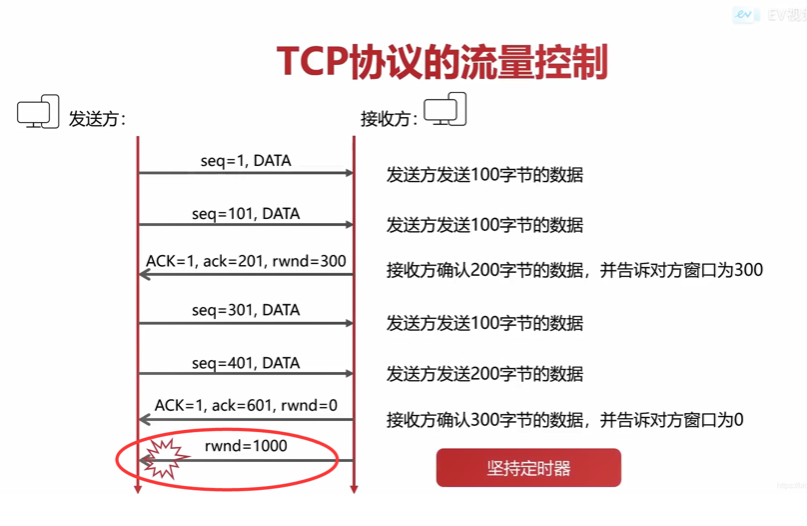

流控是针对的是发送方和接收方速度不匹配的问题（比如经典的fast sender and slow receiver问题，接收方缓存大小与发送速率不匹配），提供一种速度匹配服务遏制发送速率使接收方应用程序的读取速率与之相适应.
Flow Control 的几种思路
- Backpressure
- 应答式停等流量控制方法
- 发送方发送一信息帧后等待 ACK 回应然后再发下一帧
- 预约缓冲区法
- 发送方再发信息前，向接收方预约所到信息可用的缓冲区，并根据预约缓冲的容量发送数据。若缓冲区用完，则暂停发送，等待接收方再次分配缓冲区后继续发送
- 滑动窗口控制法
- 改变滑动窗口的大小来达到流控的效果
- 应答式停等流量控制方法
- 节流（Throttling）
- 就是丢弃。消费不过来，就处理其中一部分，剩下的丢弃。
- sample (throttleLast)
- 比如每100毫秒采样一个值，但100毫秒内上游可能过来很多值，选最后那个值，其余值丢弃。
- throttleFirst
- 与 sample 相反，取第一个值。
- FCon/FCoff
- 直接通过命令控制，一般用于全双工模式下。
- 阻塞住整个调用链（Callstack blocking）
- 这是一种特殊情况，这种方式只适用于整个调用链都在一个线程上同步执行，这种阻塞的方式简单，不需要额外的支持。
半双工
Bluetooth
底层： 应答式停等流量控制方法
- 每个包都需要等待对方的 ACK，未收到就重传。
HCI： 预约缓冲区法
- Controller to Host 和 Host to Controller 相同，都是预先获取对方的 buf 数，等待 number of complete packet 回复。
L2CAP
- Basic L2CAP Mode
- 是默认模式，在未选择其他模式的情况下，就是用此模式。
- Flow Control Mode
- 不会进行重传，但是丢失的数据能够被检测到，并报告丢失。只能用于当L2CAP之间不支持加强重传和流模式的时候。
- Retransmission Mode
- 有个 timer 来保证所有的 PDU 都传输成功了，超时重传。使用 go-back-n 策略简化协议并限制缓冲区。只能用于当L2CAP之间不支持加强重传和流模式的时候。
- Enhanced Retransmission Mode
- 用于 AMP-U 和 ACL-U 上可信任的信道。在重传模式上加了一个 POLL 位来向远程的 L2CAP 实体索要响应。
- Streaming Mode
- 为了真实的等时传输，数据包被编号但是不需要 ACK 确认。设定一个超时定时器，一旦定时器超时就将超时的数据干掉。
- LE Credit Based Flow Control Mode
- 是唯一被用于 LE 设备的信道模式。
- Basic L2CAP Mode
RFCOMM：
- based on credit 基于信用的流控机制（预约缓冲区法）
- ESP32 中初始 7 个缓冲 buf，（curr：7，MAX：10， MIN：4）。接收端处理一个包后
curr--， 当curr <= MIN时，会回复对方MAX - curr个 credit； - 发送方维持一个 buf 数
curr，每发送一个包curr--，收到对方的 credit 后curr += credit，当curr == 0时停止发送。
- ESP32 中初始 7 个缓冲 buf，（curr：7，MAX：10， MIN：4）。接收端处理一个包后
- FCon/FCoff
- RFCOMM 流控指令，用于控制两个 RFCOMM 实体之间的全部数据流，作用于所有 DLCI。
- MSC
- 调制解调器状态命令，是针对单个 DLCI 的流控机制。
- based on credit 基于信用的流控机制（预约缓冲区法）
TCP
滑动窗口
- 成块数据类型
- 如：FTP，这类协议需要传输的数据比较多，一般传输的数据量比较大。
- 接收方收到窗口的第一个包后便向后移动滑动窗口，等待应用程序取走；收到窗口内的包则暂时保留；收到窗口外的包则直接丢弃。
- 发送方窗口的第一个字节序号一定是ACK中期望收到的确认序号，收到 ack 后窗口向后移动。
- 接收方通过调整窗口的大小通知发送方发送数据
- 如果接收方发送的通知丢失, 会引发接收方和发送方同时在等待，这个时候需要用到坚持定时器
- 当接收到窗口为 0 的消息，则启动坚持定时器，每隔一段时间发送一个窗口探测报文
- 
- 成块数据类型
捎带ACK和Nagle算法
- 交互数据类型，
- 如：Telnet，这类协议一般只做小流量的数据交换，比如每按下一个键，要回显一些字符。
- 捎带ACK
- 当接收端接收到TCP报文段后，并不立即发送ACK报文，而是等上一段时间，如果这段时间里该主机有数据要发送到远程主机，就将该数据捎带上ACK一起发送过去，很明显，这样可以减少传输开销。
- Nagle算法
- 该算法的重点是要求在TCP连接上组多只能有一个未被确认的数据报在传输。算法的大致思路如下：应用程序把要发送的数据逐个字节地从到TCP的发送缓存，发送方把线面的一部分数据先发送出去，并把后面到达的字节继续缓存起来，当发送方收到前面字节的确认后，再把发送缓冲中的所有数据组装成一个报文段发送出去，同时继续对随后到来的数据进行缓存。只有收到前一个报文段的确认后才能继续发送下一个报文段。另外，Nagle算法还规定，当发送缓存中的数据已达到发送窗口大小的一半或已达到报文段的MSS值时，就立即发送一个报文段。
- 交互数据类型，
I2C (Inter－Integrated Circuit)
- 引脚
- SDA： 串行数据线
- SCL： 串行时钟线
- 0Hz - 3.4MHz
- 多主机总线，任何器件既可以作为主机也可以作为从机，但同一时刻只允许有一个主机。
- 流控
- 主器件在完成接收来自从器件的数据时总是发送一个确认位，除非其准备终止传输。从器件在其接收到来自主器件的命令或数据时总是发送一个确认位。当从器件未准备好时，它可以保持或延展时钟，直到其再次准备好响应。
全双工
以太网
- IEEE 802.3x
- 当buffer的占用率达到一定程度时，就会向外发送PAUSE帧，通知对端暂停发送一段时间。PAUSE帧只能阻止对端发送普通的数据帧，不能阻止发送MAC控制帧。
- PAUSE帧会导致一条链路上的所有报文停止发送，在服务质量要求较高的网络中，这显然是不能接受的。
- IEEE 802.1Qbb
- 基于优先级的流控（PFC）（Priority-based Flow Control）
- 针对同一链路上不同优先级的流量，单独发送PASUSE帧。当某一优先级的业务发生拥塞时，只让该类报文暂停发送，而其他类型的业务不受影响。
UART(Universal Asynchronous Receiver/Transmitter)
引脚
- RX： 数据输入
- TX： 数据输出
- GND: 共地
- [RTS]: Require ToSend，发送请求
- [CTS]: Clear ToSend，发送允许
硬件流控： RTS/CTS
- RTS的作用是告诉对方我可以接受数据，是输出口；CTS的作用是根据电平高低控制发送或不发生数据。
软件流控： XON/XOFF
- 当接收方不想继续接收数据时，通过接收方的TXD给发送方发送一个XOFF信号，发送方接收到这个字符就暂停发送数据；等到接收方可以继续接收数据时，接收方再给发送方发送一个XON信号，于是发送方继续发送数据。
- 因为XON、XOFF信号也是通过数据信号线发送的，所以软件流控在传输二进制数据时可能会出现错误，因为可能你发送的数据里面也有XON、XOFF对应的二进制值。但是这种情况也可以解决，比如对XON、XOFF进行转义。
SPI (Serial Perripheral Interface)
- 引脚
- SDI： 数据输入
- SDO： 数据输出
- SCLK： 时钟信号，由主设备产生
- CS： 片选信号
- 一主多从
- 全双工、高速、同步、非差分、总线、主从通信
- 非应答，无流控
I2S (Inter—IC Sound)
- 引脚
- SCLK：串行时钟，也叫位时钟（BCLK），即对应数字音频的每一位数据，SCLK都有1个脉冲。SCLK的频率=2×采样频率×采样位数
- LRCK(WS)：帧时钟，用于切换左右声道的数据。LRCK的频率=采样频率。
- SDATA：串行数据，就是用二进制补码表示的音频数据
- [MCLK]：主时钟，也叫系统时钟（Sys Clock）。为了使系统间能够更好地同步，MCLK的频率= 256倍或384倍采样频率。
- 支持全双工和半双工通信。
- ???
- 流控
- 数据的最高位总是出现在LRCK变化（也就是一帧开始）后的第2个SCLK脉冲处，这就使得接收端与发送端的有效位数可以不同。如果接收端能处理的有效位数少于发送端，可以放弃数据帧中多余的低位数据；如果接收端能处理的有效位数多于发送端，可以自行补足剩余的位。
Flow Control in Task
- 如何解决数据处理滞后导致的 buffer 中待处理数据不断增加累积的问题？
- 使用 ringbuf， Freertos queue, Fixed_queue 等限制上游发送速率，当下游 full 时阻塞住上游。
- 影响上游的执行效率，导致上游不能处理任何任务。严重情况下可能发生死锁。
- 使用 ringbuf， Freertos queue, Fixed_queue 等限制下游数据量，当下游 full 时直接丢弃数据。
- 数据丢失
- Task 之间使用上述的流控机制。
- 实现复杂
- 直接使用协议栈的流控机制控制住最上游的数据。
- 不是通用做法，多种协议分别控制，可能不能处理某些特殊情况。
- 使用 ringbuf， Freertos queue, Fixed_queue 等限制上游发送速率，当下游 full 时阻塞住上游。